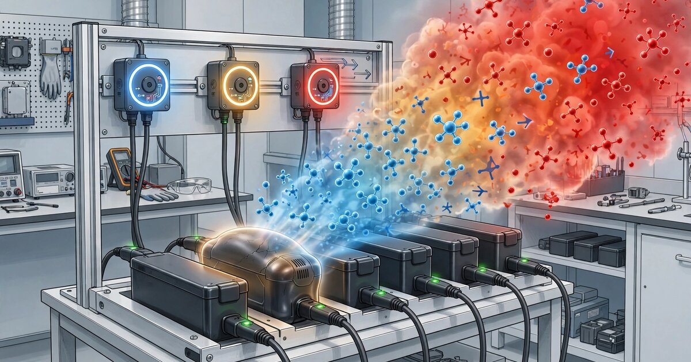

System and Method for Early Detection of Incipient Lithium-Ion Battery Thermal Runaway in Consumer Environments Using Volatile Organic Compound Emission Signature Analysis from Distributed Metal-Oxide Semiconductor Gas Sensor Arrays with Edge-Deployed Anomaly Detection

Abstract
Disclosed is a system and method for detecting incipient lithium-ion battery thermal runaway in consumer and commercial environments using distributed arrays of low-cost metal-oxide semiconductor (MOX) gas sensors. Lithium-ion cells undergoing internal short circuits, dendrite penetration, or electrolyte decomposition emit characteristic volatile organic compounds (VOCs) including dimethyl carbonate (DMC), ethyl methyl carbonate (EMC), diethyl carbonate (DEC), ethylene, and propylene at cell surface temperatures as low as 60–80°C, well below the 130–180°C separator collapse threshold that initiates full thermal runaway. The system deploys MOX sensor nodes (unit cost $8–15) near battery charging and storage areas. Each node samples a vector of resistive responses across 3–5 MOX elements with different metal-oxide coatings (SnO₂, WO₃, ZnO, In₂O₃, TiO₂) at 1 Hz, generating a multi-dimensional gas fingerprint. An edge-deployed autoencoder neural network trained on the location-specific ambient VOC baseline detects anomalous fingerprint deviations with sub-ppm sensitivity. Temporal gradient analysis of the anomaly score distinguishes slow electrolyte decomposition (cell swelling, capacity fade) from rapid pre-runaway venting, enabling tiered alerting: advisory (disconnect charger), warning (evacuate room), and critical (activate suppression). The system provides 5–45 minutes of advance warning before thermal runaway, compared to 0–30 seconds from conventional temperature-based detection.
Field of the Invention
This invention relates to fire safety and battery management, specifically to the early detection of lithium-ion battery failure using ambient gas sensing and machine learning for pre-thermal-runaway identification in residential, commercial, and industrial environments.
Background
Lithium-ion battery fires have become a public health emergency in dense urban areas. The New York City Fire Department reported 268 lithium-ion battery fires in 2023, a 58% increase over 2022, causing 18 deaths and 150 injuries. E-bike and e-scooter battery fires accounted for the largest share. The U.S. Consumer Product Safety Commission (CPSC) has issued multiple warnings and initiated recalls affecting millions of devices containing lithium-ion cells.
The physics of thermal runaway follows a well-characterized cascade. Feng et al. (Journal of Power Sources, 2012) documented three stages: (1) onset of self-heating from solid electrolyte interphase (SEI) decomposition at 90–120°C, (2) separator collapse and internal short circuit at 130–180°C, and (3) cathode decomposition and oxygen release above 200°C producing uncontrollable exothermic reactions exceeding 800°C. The transition from stage 1 to stage 3 can occur in under 30 seconds once separator integrity is lost.
Current detection methods are inadequate for consumer environments:
- Temperature sensors (thermistors, RTDs): Placed on cell surfaces, they detect thermal runaway only after significant self-heating has begun. Koch et al. (Applied Energy, 2020) showed surface temperature rise lags internal hotspot temperature by 10–60 seconds depending on cell geometry, providing minimal evacuation time.
- Voltage monitoring (BMS): Battery management systems detect cell-level voltage drops but only in managed battery packs. Aftermarket, counterfeit, and modified packs (the primary fire sources) frequently lack functional BMS circuits. Voltage changes during internal shorts can be masked by parallel cell configurations.
- Smoke detectors: Standard photoelectric and ionization smoke detectors activate only after visible smoke or aerosol production, which occurs during or after stage 2, leaving no meaningful evacuation window. Ribière et al. (Fire Safety Journal, 2017) found that conventional smoke detectors triggered 0–30 seconds before full thermal runaway flame ejection.
The critical gap in the art is this: lithium-ion electrolytes emit detectable VOCs at temperatures far below the thermal runaway cascade. Lammer et al. (Journal of The Electrochemical Society, 2017) characterized the gas emissions from NMC and LFP cells during abuse testing and found DMC, EMC, and DEC emissions beginning at 60°C and increasing exponentially through 120°C, well before mechanical failure. Koch et al. (Journal of Energy Storage, 2022) confirmed that EMC and DMC are released through micro-vents and seal defects at pressures below the catastrophic vent threshold. These VOC emissions constitute a chemical early warning signal that precedes thermal runaway by minutes to hours, yet no commercially available consumer safety device monitors for them.
MOX gas sensors are mature, low-cost, and mass-produced for consumer applications. Sensirion's SGP41 ($3.50 in volume) provides a VOC index and NOₓ measurement. Bosch's BME688 ($5.00 in volume) combines MOX gas sensing with temperature, pressure, and humidity in a single 3×3 mm package. These sensors are already deployed in consumer air quality monitors but have not been applied to battery safety detection.
Detailed Description
1. Sensor Node Architecture
Each sensor node comprises: a multi-element MOX gas sensor array consisting of 3–5 MOX sensing elements with different metal-oxide semiconductor coatings (SnO₂ for broad-spectrum VOC, WO₃ for carbonyl compounds, ZnO for light hydrocarbons, In₂O₃ for short-chain alcohols, TiO₂ for aromatic compounds); an integrated environmental sensor measuring temperature (±0.1°C), relative humidity (±1%), and barometric pressure (±1 hPa); a microcontroller with floating-point unit (e.g., ESP32-C3 with RISC-V core, unit cost $1.80) running the anomaly detection model; a WiFi/BLE radio for connectivity; and a 5V USB-C power input (intended for always-on operation near charging stations).
The target bill-of-materials cost per node is $8–15 in production volumes of 10,000+ units. This is 10–50× less expensive than laboratory gas chromatography or FTIR spectroscopy systems used in battery abuse testing, and comparable in cost to consumer smoke detectors ($15–30 retail).
2. Multi-Element Gas Fingerprinting
Each MOX element's resistance varies as a function of the reducing gases adsorbed on its heated surface. The resistance ratio Rₛ/R₀ (where Rₛ is resistance in the target gas and R₀ is resistance in clean air) provides a semi-quantitative gas concentration measurement. Because different metal oxides exhibit different sensitivity profiles to the same gas, the vector of resistance ratios across the 3–5 elements forms a characteristic fingerprint for different gas mixtures.
For lithium-ion electrolyte decomposition products, the fingerprint is distinctive. DMC (C₃H₆O₃) and EMC (C₄H₈O₃) are carbonate esters that produce strong responses on SnO₂ and WO₃ elements (Rₛ/R₀ = 0.2–0.5 at 10 ppm) but weak responses on ZnO (Rₛ/R₀ = 0.7–0.9). Ethylene (C₂H₄), a pyrolysis product from polyethylene separator decomposition, produces the inverse pattern: strong ZnO response, weak WO₃ response. This orthogonality enables the system to distinguish battery-specific VOC emissions from common household VOCs such as cooking fumes, cleaning products, perfumes, and off-gassing from new furniture.
The sensor array samples all elements at 1 Hz. Each sample produces a feature vector of dimensionality 3N+3 (N elements × [raw resistance, temperature-compensated ratio, first temporal derivative] + [ambient temperature, humidity, pressure]). For a 4-element array, this yields a 15-dimensional feature vector per second.
3. Ambient Baseline Learning and Anomaly Detection
The core detection algorithm is an autoencoder neural network operating on the sensor feature vectors. The autoencoder architecture consists of: an encoder with two fully connected layers (15 → 10 → 5 neurons) with ReLU activation; a latent space of dimensionality 5; and a decoder with two fully connected layers (5 → 10 → 15 neurons) mirroring the encoder. Total parameter count: approximately 400 parameters (1.6 KB at float32), easily fitting in the ESP32-C3's 400 KB SRAM.
During a 72-hour calibration period after installation, the autoencoder trains on the location-specific ambient VOC profile using online stochastic gradient descent. This captures the normal daily patterns of cooking, cleaning, HVAC operation, human occupancy, and seasonal ventilation variation. The reconstruction error (mean squared error between input and output) establishes the baseline distribution. Post-calibration, the system continues passive online learning at a 100× reduced learning rate to adapt to gradual environmental drift (new furniture, seasonal changes, occupancy patterns).
An anomaly is flagged when the reconstruction error exceeds a threshold defined as μ + kσ of the calibration-period error distribution, where k is a configurable sensitivity parameter (default k=4, yielding a false alarm rate of approximately 1 per 16,000 samples, or roughly one per 4.4 hours at 1 Hz sampling). To suppress transient false alarms from brief VOC events (e.g., opening a cleaning product bottle), the system requires the anomaly score to exceed the threshold for a sustained duration window (default: 30 consecutive seconds).
4. Temporal Gradient Classification
Once an anomaly is confirmed, the system classifies the temporal gradient of the anomaly score to distinguish between three failure modes:
- Slow decomposition (hours to days): Anomaly score increases at <0.01σ/minute. Characteristic of chronic electrolyte leakage through seal defects, manufacturing defects causing gradual SEI instability, or slow overcharge damage. This pattern provides hours to days of warning. Response: advisory alert (disconnect charger, inspect battery).
- Accelerating decomposition (minutes to hours): Anomaly score increases at 0.01–0.5σ/minute with positive second derivative (accelerating rate). Characteristic of internal short circuit progression from dendrite growth, foreign particle contamination, or mechanical damage to a cell that has not yet reached separator collapse temperature. This pattern provides 5–45 minutes of warning. Response: warning alert (remove battery from building, prepare for evacuation).
- Rapid venting (seconds to minutes): Anomaly score increases at >0.5σ/minute. Characteristic of active thermal runaway with pressure vent activation releasing large volumes of electrolyte vapor. At this stage, the battery may be seconds to minutes from flame ejection. Response: critical alert (evacuate immediately, activate suppression if available).
The gradient classifier uses a sliding window of 60 seconds with linear regression on the anomaly score time series. The slope and curvature (second-order coefficient of a quadratic fit) determine the classification tier.
5. Environmental Compensation
MOX sensor responses are strongly influenced by ambient temperature and humidity. The system applies compensation using the Arrhenius equation for temperature dependence (activation energy of surface reactions varies by metal oxide: SnO₂ = 0.3–0.5 eV, WO₃ = 0.4–0.6 eV) and an empirical humidity correction derived from the integrated humidity sensor. Temperature compensation is applied as: R_corrected = R_measured × exp(Eₐ/kᴱ × (1/T_ref − 1/T_measured)), where Eₐ is the activation energy, kᴱ is Boltzmann's constant, T_ref is the calibration reference temperature (25°C = 298.15 K), and T_measured is the current ambient temperature.
Humidity compensation uses a lookup table derived from characterization data, as the MOX resistance-humidity relationship is nonlinear and varies by oxide composition. The lookup table is populated during factory calibration or, for consumer-grade deployment, during the 72-hour ambient learning period using the co-located humidity sensor.
6. Multi-Node Spatial Correlation
In deployments with multiple sensor nodes (e.g., a multi-story apartment building, a commercial e-bike charging depot, or a battery recycling facility), cross-node correlation provides spatial localization of the emission source and reduces false alarm rates. When a single node flags an anomaly, the system queries neighboring nodes (within a configurable radius, default 15 meters) for correlated anomaly score elevation. Confirmed multi-node events receive higher confidence scores.
Spatial gas dispersion modeling (simplified Gaussian plume with measured HVAC airflow direction) estimates the source location as the point that best explains the observed concentration gradients across nodes. For a 3+ node detection, localization accuracy is approximately ±2 meters in typical indoor environments with mechanical ventilation.
7. Integration with Building Safety Systems
The sensor network communicates via WiFi, BLE Mesh, or Zigbee to a local gateway or directly to cloud infrastructure. Alert integration pathways include: local audible/visual alarm on the sensor node itself (piezo buzzer + red LED); push notification to smartphone via companion application; MQTT message to building management system (BMS) for HVAC isolation, fire panel activation, and elevator recall; API webhook for monitoring service integration; and relay output for direct control of battery disconnect switches or fire suppression solenoids.
For residential charging applications, the simplest deployment is a single sensor node mounted within 0.5 meters of the primary battery charging location, connected via WiFi to the home network, providing smartphone alerts through a companion application.
8. Figures Description
- Figure 1: System architecture showing sensor node placement near battery charging stations, multi-element MOX gas sensor array detail, microcontroller processing pipeline, and alert integration pathways.
- Figure 2: Characteristic VOC emission profiles for lithium-ion electrolyte decomposition products (DMC, EMC, DEC, ethylene) as a function of cell temperature, showing the detection window between first VOC emission (60–80°C) and thermal runaway onset (130–180°C).
- Figure 3: Multi-element gas fingerprint comparison showing MOX resistance ratio vectors for battery electrolyte vapors versus common household VOCs (cooking, cleaning, perfume), demonstrating orthogonal discrimination.
- Figure 4: Autoencoder anomaly score time series during a simulated slow decomposition, accelerating decomposition, and rapid venting event, showing the temporal gradient classification boundaries and corresponding alert tiers.
- Figure 5: Multi-node spatial correlation geometry in a commercial e-bike charging depot, showing Gaussian plume dispersion model for source localization from distributed sensor readings.
Claims
- A system for early detection of lithium-ion battery thermal runaway, comprising: one or more sensor nodes, each containing a multi-element metal-oxide semiconductor gas sensor array with at least three MOX sensing elements of different metal-oxide compositions; an environmental sensor measuring ambient temperature and humidity; and a microcontroller executing an anomaly detection model; wherein the system detects volatile organic compound emissions characteristic of lithium-ion electrolyte decomposition at cell temperatures below the thermal runaway onset temperature.
- The system of claim 1, wherein the MOX sensing elements comprise two or more of tin dioxide (SnO₂), tungsten trioxide (WO₃), zinc oxide (ZnO), indium oxide (In₂O₃), and titanium dioxide (TiO₂), selected to provide orthogonal sensitivity profiles for distinguishing battery electrolyte decomposition products from common household volatile organic compounds.
- The system of claim 1, wherein the anomaly detection model is an autoencoder neural network that learns a location-specific ambient VOC baseline during a calibration period and flags deviations from the baseline as potential battery failure events.
- The system of claim 3, wherein the autoencoder continues passive online learning at a reduced rate after the initial calibration period to adapt to gradual environmental drift including seasonal ventilation changes, new furniture off-gassing, and occupancy pattern shifts.
- The system of claim 1, further comprising a temporal gradient classifier that analyzes the rate of change of the anomaly score to distinguish between slow electrolyte decomposition, accelerating pre-runaway decomposition, and rapid venting events, and generates tiered alerts corresponding to the classified severity.
- The system of claim 1, wherein MOX sensor resistance readings are compensated for ambient temperature using an Arrhenius correction model with oxide-specific activation energies and for ambient humidity using an empirical lookup table derived from the co-located environmental sensor.
- The system of claim 1, wherein multiple sensor nodes communicate wirelessly to correlate anomaly detections across nodes and estimate the spatial location of the emission source using gas dispersion modeling.
- A method for detecting incipient lithium-ion battery thermal runaway comprising: continuously sampling a multi-element MOX gas sensor array at a rate of at least 0.5 Hz; computing temperature-compensated and humidity-compensated resistance ratio feature vectors; comparing feature vectors against a learned ambient baseline using an autoencoder reconstruction error metric; flagging sustained anomaly score elevation exceeding a configurable threshold for a minimum duration; and classifying the temporal gradient of the anomaly score to determine battery failure severity and appropriate response tier.
- The method of claim 8, wherein the sustained duration requirement for anomaly flagging is configurable between 10 and 120 seconds to balance detection latency against false alarm rate for different deployment environments.
- The method of claim 8, further comprising integration with building safety systems via MQTT, API webhook, or relay output to trigger automated responses including battery charger disconnection, HVAC isolation, fire panel notification, and occupant evacuation alerts.
- The system of claim 1, wherein each sensor node has a bill-of-materials cost below $20 and is powered via USB-C for continuous operation near battery charging and storage locations, and wherein the anomaly detection model operates within the memory and compute constraints of a sub-$2 microcontroller without cloud connectivity requirements.
Prior Art References
- FDNY Lithium-Ion Battery Fire Statistics 2023 — 268 fires, 18 deaths, 150 injuries in New York City
- CPSC E-Bike/E-Scooter Battery Fire Warnings — Federal recalls and safety advisories
- Feng et al., Journal of Power Sources (2012) — Three-stage thermal runaway cascade characterization
- Koch et al., Applied Energy (2020) — Surface vs. internal temperature lag during thermal runaway
- Ribière et al., Fire Safety Journal (2017) — Smoke detector response timing during battery thermal runaway
- Lammer et al., Journal of The Electrochemical Society (2017) — Gas emission characterization from NMC and LFP cells during abuse
- Koch et al., Journal of Energy Storage (2022) — EMC and DMC release through micro-vents below catastrophic vent threshold
- Sensirion SGP41 — Consumer MOX VOC + NOₓ sensor ($3.50)
- Bosch BME688 — Combined MOX gas + environmental sensor ($5.00)
- ESP32-C3 — RISC-V microcontroller with WiFi/BLE ($1.80)
- Baur et al., Sensors and Actuators B (2020) — MOX sensor arrays for gas mixture discrimination using machine learning
- Essl et al., Journal of Power Sources (2020) — Comprehensive gas emission analysis during Li-ion cell venting